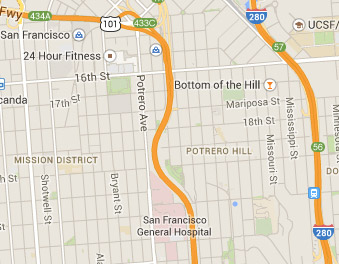

...
In the next three months, there are six events planned. Here they
are:
/\/\/ Visit the Wattis . . .
The Wattis Institute is located in San Francisco. It is open and free to
the public. The address is:
CCA Wattis Institute
Kent and Vicki Logan Gallery
360 Kansas Street
(between 16th & 17th Streets)
San Francisco, CA 94013
USA
Tuesday–Friday noon-7pm
Saturday noon–5pm
Closed Sunday & Monday
+1 415 355 9670
Directions:
BUS 22 (to 16th & Kansas)
BUS 19 (to 16th & Rhode Island)
BART (to 16th & Mission, then transfer to BUS 22 towards
Potrero Hill)
Street parking is available and a parking lot is also located across the
road.

Please book a guided tour with
Rita Souther at 415.355.9673 or rsouther@cca.edu.